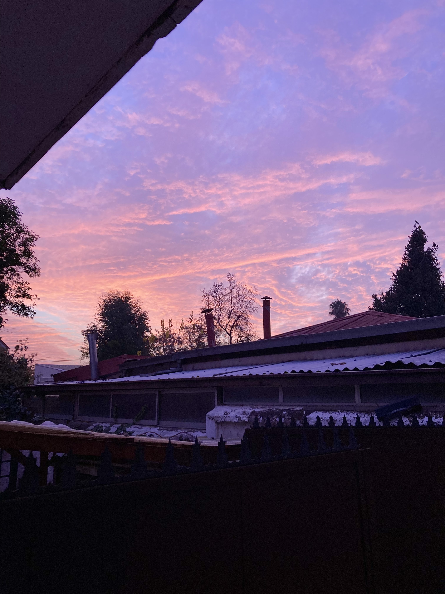
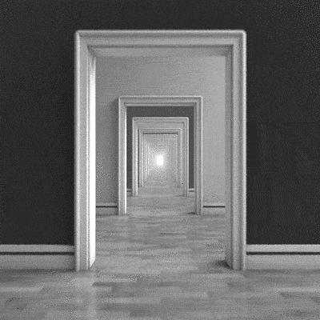
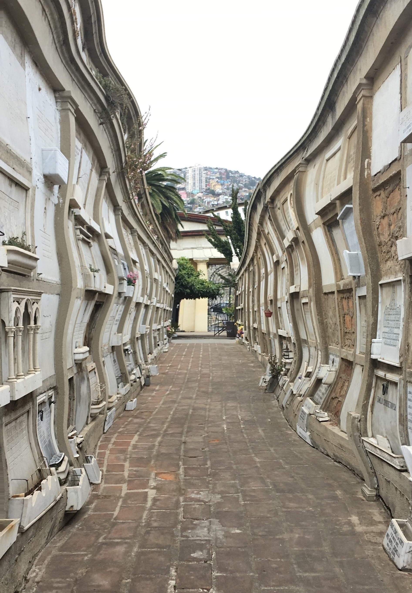
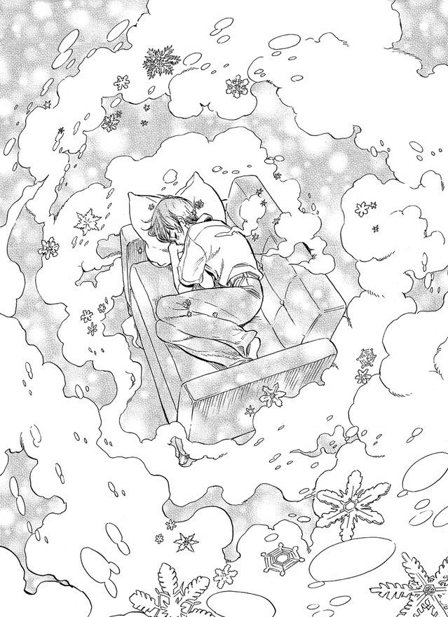

Un camino por el encierro...
01
Año
03
Meses
Diario
~ de cuarentena ~

Mundo exterior
De vez en cuando busco alguna excusa para visitarlo y pretender volver a la normalidad por algunos instantes.

Vista desde mi ventana
Me gusta coleccionar fotos del atardecer que veo desde mi ventana. Quizás por sea la contamincación de invierno, pero estos días han estado muy lindos.

Compañía
La verdad es que sin ellos no sé que haría.

Monotonía
La extrañeza del encierro se volvió cotidiana. Me cuesta diferenciar entre los días.

Nostalgia
Vuelvo a visitar recuerdos pasados una y otra vez.

Apreciación
A pesar de todo, me alegra haberme podido conocer un poco mejor.